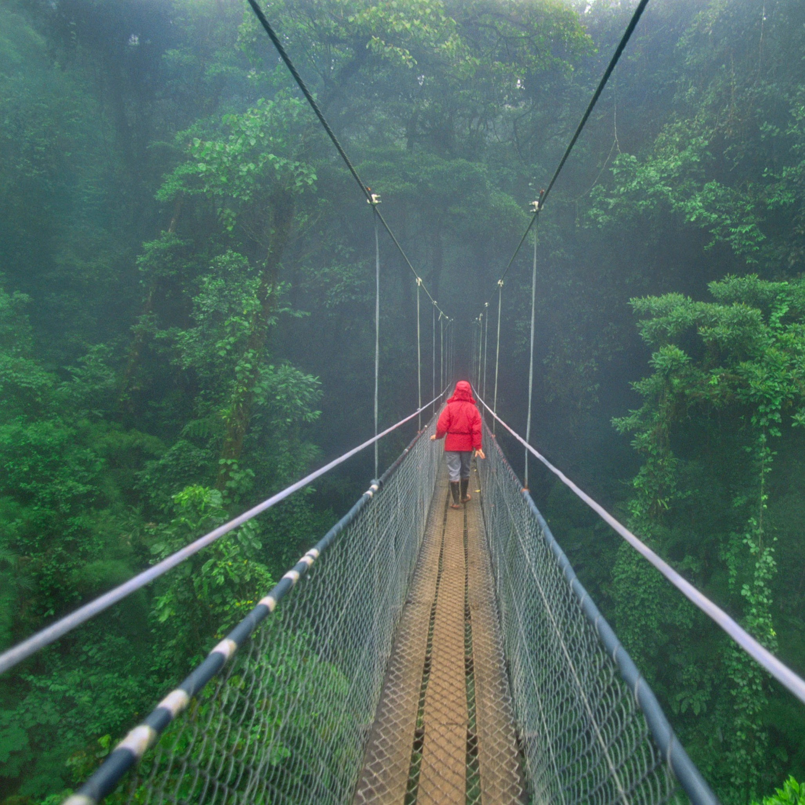
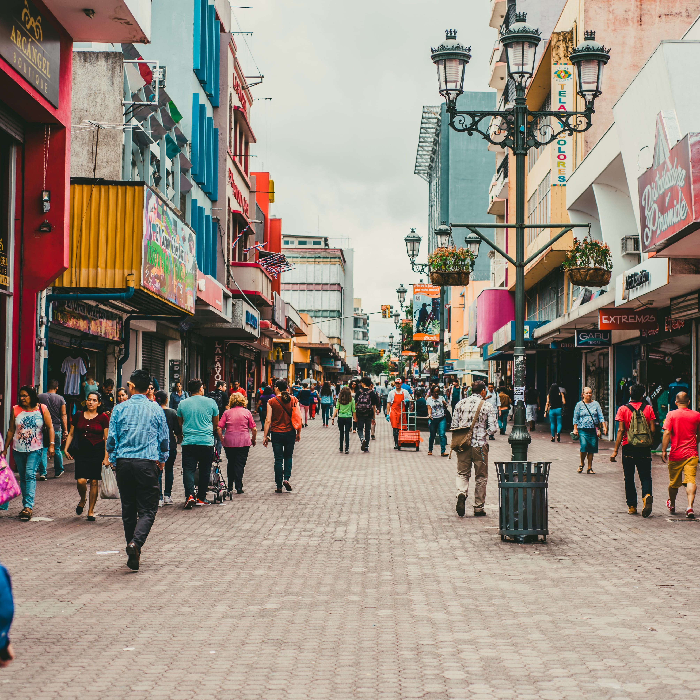

Costa Rica
From Lush Rainforests to Pristine Beaches, Exploring the Gem of Central America
My Costa Rican adventure began in the capital city, San José, where I immersed myself in the vibrant local culture. Strolling through bustling markets, I sampled exotic fruits and interacted with friendly Ticos (Costa Ricans). The Gold Museum and National Theater offered glimpses into the country's history and artistic heritage. Learning the meaning of "Pura Vida," a Costa Rican philosophy that celebrates the simple joys of life, set the tone for my journey.
 My exploration took me to Arenal Volcano, a majestic, active volcano surrounded by lush rainforests and hot springs. Hiking the trails around the volcano, I witnessed breathtaking views of its symmetrical cone. An evening dip in the Tabacón Hot Springs, naturally heated by Arenal's geothermal activity, was a therapeutic experience. The nocturnal lava flows added an element of awe to this natural spectacle.
Venturing to Monteverde, I found myself in the ethereal Monteverde Cloud Forest Reserve. Suspended on treetop canopy walkways, I immersed myself in the misty, moss-covered world of the cloud forest. The symphony of bird calls, including the resplendent quetzal's melodious song, echoed through the mist. Visiting a coffee plantation in the region provided insights into Costa Rica's rich coffee culture.
Manuel Antonio National Park, on the Pacific coast, beckoned with pristine beaches and abundant wildlife. Hiking through lush rainforests, I encountered capuchin monkeys, sloths, and exotic birds. Relaxing on the park's secluded beaches, I marveled at the tranquil fusion of jungle and sea. Snorkeling in the clear waters revealed vibrant coral reefs teeming with marine life.
 Journeying to Tortuguero, I found myself in a remote paradise accessible only by boat or plane. Known as the "Land of Turtles," Tortuguero is a critical nesting site for sea turtles. Under the guidance of local conservationists, I witnessed the awe-inspiring sight of sea turtles nesting on the shores under the cover of night. Exploring Tortuguero's maze of canals by boat revealed a world of abundant wildlife, from river otters to caimans.
Corcovado National Park, often hailed as the "crown jewel" of Costa Rica's national park system, captivated me with its pristine wilderness. Hiking through dense rainforests, I encountered jaguars, tapirs, and scarlet macaws. The park's biodiversity is unparalleled, making it a true haven for nature enthusiasts. A night hike allowed me to witness the secrets of the rainforest after dark.
My journey concluded in Guanacaste, a region known for its stunning beaches and rich cultural heritage. Exploring the colonial town of Liberia, I admired the adobe architecture and visited local artisans. The Guanacaste coast offered world-class surfing and sunsets that painted the sky in fiery hues. Savoring traditional Costa Rican dishes like gallo pinto and ceviche was a culinary delight.
As I reflect on my journey across Costa Rica, I am humbled by the country's incredible biodiversity, from the fiery Arenal Volcano to the mystical Monteverde Cloud Forest, the pristine beaches of Manuel Antonio to the turtle paradise of Tortuguero, the untamed wilderness of Corcovado to the cultural richness of Guanacaste. Costa Rica's commitment to conservation and its warm, hospitable people have left an indelible mark on my soul.
Join me in future travels as I continue to explore the captivating regions of the Americas, each offering its own unique blend of beauty and cultural richness. Until next time, may your journeys be filled with the spirit of Pura Vida!